대기환경기사 (2013-03-10 기출문제)
1과목: 대기오염 개론
1. 낮과 밤에 기온 및 기온의 연직분포 특성에 관한 설명으로 거리가 먼 것은?
- 낮에는 고도(지중에서는 깊이)에 따라 온도가 감소하므로 기온감율(dT/dZ)은 음의값이 되며, 이러한 상태를 체감상태라 한다.
- 현열은 낮에는 공기중에서 지표로, 밤에는 지표에서 공기중으로 향하게 된다.
- 지표에 가까울수록 낮에 기온이 더 높고 밤에 기온은 더 낮으므로 기온의 일교차는 지표면 부근에서 가장 크다.
- 고도에 따른 온도의 기울기는 지표면 부근에서 가장 크고, 고도(또는 깊이)에 따라 감소한다.
(정답률: 69%)

2. 다음 중 태양상수값으로 가장 적합한 것은?
- 0.1cal/cm2ㆍmin
- 1cal/cm2ㆍmin
- 2cal/cm2ㆍmin
- 10cal/cm2ㆍmin
(정답률: 80%)
3. 다음 대기분산모델 중 광화학모델로서 미국에서 개발되었으며, 도시지역에서의 광화학반응을 고려하여 오염물질의 이동을 계산하는 것은?
- ADMS
- CTDMPLUS
- SMOGSTOP
- UAM
(정답률: 82%)
4. 다음 대기오염물질 중 바닷물의 물보라 등이 배출원이며, 1차 오염물질에 해당하는 것은?
- N2O3
- 알데하이드
- HCN
- NaCl
(정답률: 85%)
5. 가우시안형의 대기오염확산방정식을 적용할 때 지면에 있는 오염원으로부터 바람부는 방향으로 250m 떨어진 연기의 중심축 상 지상 오염농도(mg/m3)를 구하면? (단, 오염물질의 배출량 6g/sec, 풍속 4.5m/sec, σy는 22.5m, σz는 12m이다.)
- 1.26
- 1.36
- 1.57
- 1.83
(정답률: 61%)
6. 시정거리에 관한 설명으로 거리가 먼 것은? (단, 입자 산란에 의해서만 빛이 감쇠되고, 입자상물질은 모두 같은 크기의 구형태로 분포하고 있다고 가정한다.)
- 시정거리는 대기 중 입자의 산란계수에 비례한다.
- 시정거리는 대기 중 입자의 농도에 반비례한다.
- 시정거리는 대기 중 입자의 밀도에 비례한다.
- 시정거리는 대기 중 입자의 직경에 비례한다.
(정답률: 79%)
7. 입자상 오염물질 중 훈연(fume)에 관한 설명으로 가장 거리가 먼 것은?
- 금속 산화물과 같이 가스상 물질이 승화, 증류 및 화학반응 과정에서 응축될 때 주로 생성되는 고체입자이다.
- 20-50㎛ 정도의 크기가 대부분이다.
- 활발한 브라운 운동을 한다 .
- 아연과 납산화물의 훈연은 고온에서 휘발된 금속의 산화와 응축과정에서 생성된다.
(정답률: 65%)
8. 광화학반응에 관한 설명으로 옳지 않은 것은?
- NO2는 도시 대기오염물질 중에서 가장 중요한 태양빛 흡수기체로서 파장 420nm이상의 가시광선에 의해 NO와 O로 광분해된다.
- 알데하이드(RCHO)는 파장 313nm이하에서 광분해 한다.
- 케톤은 파장 300-700nm에서 약한 흡수를 하여 광분해한다.
- SO2는 대류권에서 쉽게 광분해되며, 파장 450-500nm에서 강한 흡수를 한다.
(정답률: 72%)
9. 유해가스상 물질의 독성에 관한 설명으로 거리가 먼 것은?
- SO2는 0.1-1ppm에서도 수시간 내에 고등식물에게 피해를 준다.
- CO2독성은 10ppm 정도에서 인체와 식물에 해롭다.
- CO는 100ppm까지는 1-3주간 노출되어도 고등식물에 대한 피해는 약하다.
- HCl은 SO2보다 식물에 미치는 영향이 훨씬 적으며, 한계농도는 10ppm에서 수시간 정도이다.
(정답률: 71%)
10. 아황산가스가 식물에 미치는 영향으로 가장 거리가 먼 것은?
- 생활력이 왕성한 잎이 피해를 많이 입으며, 고구마, 시금치 등이 약한 식물로 알려져 있다.
- 같은 농도에서는 낮보다는 야간에 피해를 많이 받는다.
- 피해를 입은 부위는 황갈색 내지 회백색으로 퇴색된다.
- 잎 뒤쪽 표피 밑의 세포(Parenchyma)가 피해를 입기 시작한다.
(정답률: 67%)
11. 공기역학적직경(Aerodynamic Diameter)에 관한 설명으로 가장 적합한 것은?
- 원래의 먼지와 침강속도가 동일하며 밀도가 1g/cm3인 구형입자의 직경
- 원래의 먼지와 침강속도가 동일하며 밀도가 1kg/cm3인 구형입자의 직경
- 원래의 먼지와 밀도 및 침강속도가 동일한 선형 입자의 직경
- 원래의 먼지와 밀도 및 침강속도가 동일한 구형 입자의 직경
(정답률: 83%)
12. 질소산화물에 관한 설명으로 거리가 먼 것은?
- 아산화질소(N2O)는 성층권의 오존을 분해하는 물질로 알려져 있다.
- 전세계의 질소화합물 배출량 중 인위적인 배출량은 자연적 배출량의 약 70%정도 차지하고 있으며, 그 비율은 점차 증가하는 추세이다.
- 아산화질소(N2O)는 대류권에서 태양에너지에 대하여 매우 안정하다.
- 연료 NOx는 연료 중 질소화합물 연소에 의해 발생되고, 연료 중 질소화합물은 일반적으로 석탄에 많고 중유, 경유 순으로 적어진다.
(정답률: 81%)
13. 입자에 의한 산란에 관한 설명으로 옳지 않은 것은? (단, λ: 파장, D: 입자직경)
- 레일리산란은 D/λ가 10보다 클 때 나타나는 산란현상으로 산란광의 광도는 λ4에 비례한다.
- 맑은 하늘이 푸르게 보이는 까닭은 태양광선의 공기에 의한 레일리산란 때문이다.
- 레일리산란에 의해 가시광선 중에서는 청색광이 많이 산란되고, 적색광이 적게 산란된다.
- 입자의 크기가 빛의 파장과 거의 같거나 큰 경우에 나타나는 산란을 미산란이라고 한다.
(정답률: 76%)
14. 배출오염물질과 관련업종으로 가장 거리가 먼 것은?
- 암모니아 : 비료공장, 냉동공장, 표백, 색소제조공장
- 염소 : 석유정제, 석탄건류, 가스공업
- 비소 : 화학공업, 유리공업, 과수원의 농약 분무작업
- 불화수소 : 알루미늄공업, 요업, 인산비료공업
(정답률: 70%)
15. 대기의 안정도와 관련된 리차드슨수(Ri)를 나타낸 식으로 옳은 것은? (단, g: 그 지역의 중력가속도, θ: 잠재온도, U: 풍속, Z: 고도)
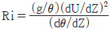
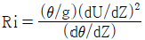
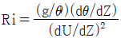
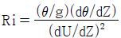
(정답률: 73%)
16. 상온에서 무색이며, 자극성 냄새를 가진 기체로서 비중이 약 1.03(공기=1)인 오염물질은?
- 아황산가스
- 폼알데하이드
- 이산화탄소
- 염소
(정답률: 75%)
17. 굴뚝 배출가스량 15m3/s, HCl의 농도 802ppm, 풍속 20m/s, Ky=0.07, Kz=0.08 인 중립 대기조건에서 중심축상 최대 지표농도가 1.61×10-2ppm인 경우 굴뚝의 유효고는? (단, Sutton의 확산식을 이용한다.)
- 약 30m
- 약 50m
- 약 70m
- 약 100m
(정답률: 51%)
18. 대기와 해양의 상호작용에 해당되는 엘니뇨와 라니냐에 관한 설명으로 옳지 않은 것은?
- 엘니뇨와 상대적인 현상으로 라니냐는 무역풍이 상대적으로 약화되어 서태평양의 온도가 감소된다.
- 대기와 해양의 상호작용으로 열대 동태평양에서 중태평양에 걸친 광범위한 구역에서 해수면의 온도 상승을 엘니뇨라 한다.
- 엘니뇨와 라니냐는 서로 독립적인 현상이 아니라, 반대 위상을 가지는 자연계의 진동현상이라 할 수 있다.
- 엘니뇨 시기에는 서태평양의 기압이 높아지고 남태평양의 기압이 내려가는 남방진동이 나타난다.
(정답률: 63%)
19. 상자모델을 전개하기 위하여 설정된 가정으로 가장 거리가 먼 것은?
- 오염물은 지면의 한 지점에서 일정하게 배출된다.
- 고려된 공간에서 오염물질의 농도는 균일하다.
- 고려되는 공간의 수직단면에 직각방향으로 부는 바람의 속도가 일정하여 환기량이 일정하다.
- 오염물의 분해는 일차반응에 의한다.
(정답률: 77%)
20. A사업장 내 굴뚝에서의 이산화질소 배출가스가 표준상태에서 44mg/Sm3로 일정하게 배출되고 있다. 이를 ppm 단위로 환산하면?
- 21.4ppm
- 24.4ppm
- 44.8ppm
- 48.8ppm
(정답률: 64%)
2과목: 연소공학
21. 보일러에서 저온부식을 방지하기 위한 방법으로 가장 거리가 먼 것은?
- 과잉공기를 줄여서 연소한다.
- 가스온도를 산노점 이하가 되도록 조업한다.
- 연료를 전처리하여 유황분을 제거한다.
- 장치표면을 내식재료로 피복한다.
(정답률: 75%)
22. 다음 연료 중 (CO2)max 값(%)이 가장 큰 것은?
- 고로가스
- 코우크스로가스
- 갈탄
- 역청탄
(정답률: 64%)
23. 액체연료의 성분분석결과 탄소 84%, 수소 11%, 황 2.4%, 산소 1.3%, 수분 1.3% 이었다면 이 연료의 저위발열량은? (단, Dulong 식을 사용)
- 약 8000 kcal/kg
- 약 10000 kcal/kg
- 약 13000 kcal/kg
- 약 15000 kcal/kg
(정답률: 47%)
24. 다음 연료의 완전연소 시 발열량(kcal/Sm3)이 가장 큰 것은?
- Propane
- Ethylene
- Acetylene
- Propylene
(정답률: 69%)
25. 프로판(C3H8) 1Sm3을 완전연소 시켰을 때 건조연소가스 중의 CO2 농도는 11%이었다. 공기비는 약 얼마인가?
- 1.⑤
- 1.15
- 1.23
- 1.39
(정답률: 50%)
26. 다음 중 매연 발생원인으로 가장 거리가 먼 것은?
- 연소실의 체적이 적을 때
- 통풍력이 부족할 때
- 석탄 중에 황분이 많을 때
- 무리하게 연소시킬 때
(정답률: 57%)
27. 프로판 1Sm3을 공기비 1.4로 완전연소 시킬 때 실제 습연소가스량(Sm3)은?
- 25.8
- 28.8
- 32.1
- 35.3
(정답률: 51%)
28. 석탄에 함유된 수분의 3가지 수분형태와 거리가 먼 것은?
- 유효수분
- 부착수분
- 고유수분
- 화합수분(결합수분)
(정답률: 55%)
29. 석탄 사용 가열로의 배기가스를 분석한 결과 CO2: 15%, O2: 5%, N2: 80%였다. 이 때 공기비는 대략 얼마인가? (단, 연료 중 질소는 무시한다. )
- 1.31
- 1.74
- 1.92
- 2.12
(정답률: 51%)
30. 착화점이 높아지는 조건에 관한 설명으로 옳은 것은?
- 분자구조가 복잡할수록
- 발열량이 낮을수록
- 산소의 농도가 클수록
- 화학반응성이 클수록
(정답률: 59%)
31. 다음 중 기체연료의 연소방식에 해당되는 것은?
- 스토커 연소
- 회전식버너(Rotary burner) 연소
- 예혼합 연소
- 유동층 연소
(정답률: 74%)
32. 다음 중 폭발성 혼합가스의 연소범위(L)를 구하는 식으로 옳은 것은? (단, nn: 각 성분 단일의 연소한계(상한 또는 하한), Pn: 각 성분 가스의 체적(%))
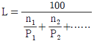
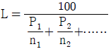
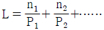
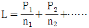
(정답률: 71%)
33. 연소장치의 특성에 관한 설명으로 옳지 않은 것은?
- 유동층 연소는 다른 연소법에 비해 NOx 생성 억제가 잘 되고, 화염층을 작게 할 수 있으므로 장치의 규모를 작게 할 수 있다.
- 산포식 스토커, 계단식 스토커에 의한 연소방식은 화격자 연소장치에 속한다.
- 미분탄을 사용하는 연소시설에서는 화염의 전파속도는 기체연료에 비해 작으며, 만일 버너로부터 분출속도가 클 경우에는 역화의 우려가 발생할 수 있다.
- 미분탄 연소는 사용연료의 범위가 넓고, 스토커 연소에 적합하지 않은 점결탄과 저발열량탄 등도 사용할수가 있다.
(정답률: 43%)
34. 다음 중 확산연소에 사용되는 버너로서 주로 천연가스와 같은 고발열량의 가스를 연소시키는데 사용되는 것은?
- 건타입 버너
- 선회 버너
- 방사형 버너
- 고압 버너
(정답률: 68%)
35. 기체연료 중 연소하여 수분을 생성하는 H2와 CxHy 연소반응의 발열량 산출식에서 아래의 480이 의미하는 것은?
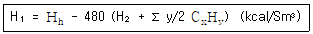
- H2O 1kg의 증발잠열
- H2 1kg의 증발잠열
- H2O 1Sm3의 증발잠열
- H2 1Sm3의 증발잠열
(정답률: 74%)
36. 액체연료의 연소방식을 기화(Vaporization)연소방식과 분무화(Atomization)연소방식으로 분류할 때 다음 중 기화 연소방식에 해당하지 않는 것은?
- 심지식 연소
- 반전식 연소
- 포트식 연소
- 증발식 연소
(정답률: 45%)
37. 어떤 반응에서 0℃에서의 반응속도상수가 0.001S-1이고, 100℃에서의 반응속도상수가 0.⑤S-1일 때 활성화에너지(KJ/mol)는?
- 25
- 33
- 41
- 50
(정답률: 53%)
38. 다음 중 표준공기 내에서 연소범위(Vol%)가 가장 넓은 것은?
- 메탄
- 아세틸렌
- 벤젠
- 톨루엔
(정답률: 66%)
39. C=82%, H=15%, S=3%의 조성을 가진 액체연료를 2kg/min으로 연소시켜 배기가스를 분석하였더니 CO2=12.0%, O2=5%, N2=83% 라는 결과를 얻었다. 이 때 필요한 연소용 공기량(Sm3/hr)은?
- 약 1,100
- 약 1,300
- 약 1,600
- 약 1,800
(정답률: 41%)
40. 화학반응속도 및 반응속도상수에 관한 설명으로 옳지 않은 것은?
- 1차 반응에서 반응속도상수의 단위는 S-1 이다.
- 반응물의 농도를 무제한 증가할지라도 반응속도에는 영향을 미치지 않는 반응을 0차 반응이라 한다.
- 화학반응속도론에서 반응속도상수 결정에 활성화에너지가 가장 주요한 영향인자로 작용하며, 넓은 온도범위에 걸쳐 유효하게 적용된다.
- 반응속도상수는 온도에 영향을 받는다.
(정답률: 62%)
3과목: 대기오염 방지기술
41. 직경 10㎛인 입자의 침강속도가 0.5cm/sec였다. 같은 조성을 지닌 30㎛입자의 침강속도는? (단, 스토크 침강속도식 적용)
- 1.5 cm/sec
- 2 cm/sec
- 3 cm/sec
- 4.5 cm/sec
(정답률: 47%)
42. 원심력 집진장치에 사용되는 용어에 관한 설명으로 옳지 않은 것은?
- 임계입경(Critical Diameter)은 100% 분리한계입경이라고도 한다.
- 분리계수가 클수록 집진율은 증가한다.
- 분리계수는 입자에 작용하는 원심력을 관성력으로 나눈 값이다.
- 사이클론에서 입자의 분리속도는 함진가스의 선회속도에는 비례하는 반면, 원통부 반경에는 반비례한다.
(정답률: 56%)
43. Co-Ni-Mo을 수소첨가촉매로 하여 250-450℃에서 30-150kg/cm2의 압력을 가하여 H2S, S, SO2 형태로 제거하는 중유탈황방법은?
- 직접탈황법
- 흡착탈황법
- 활성탈황법
- 산화탈황법
(정답률: 67%)
44. 흡착제를 친수성(극성)과 소수성(비극성)으로 구분 할 때, 다음 중 친수성 흡착제에 해당하지 않는 것은?
- 활성탄
- 실리카겔
- 활성 알루미나
- 합성 지올라이트
(정답률: 65%)
45. 충전탑에 관한 설명으로 가장 거리가 먼 것은?
- 충전제는 화학적으로 불활성이어야 한다.
- 충전재를 규칙적으로 충전하면 불규칙적으로 충전하는 방법에 비하여 압력손실이 적어진다.
- 편류현상은 [탑의직경/충전제의 직경]의 비가 8-10 범위일 때 최소가 된다.
- 보통 가스유속은 부하점(Loading Point)에서의 유속의 70-80% 조작이 적당하다.
(정답률: 55%)
46. 다음 중 표면적이 200m2/g 정도로서, 주로 휘발유 및 용제정제 등으로 사용되는 흡착제는?
- 실리카겔(Silica Gel)
- 본차(Bone Char)
- 폴링(Pall Ring)
- 마그네시아(Magnesia)
(정답률: 65%)
47. 유해가스 처리 시 사용되는 충전탑(Packed Tower)에 관한 설명으로 옳지 않은 것은?
- 액분산형 흡수장치로서 충전물의 충전방식을 불규칙적으로 했을 때 접촉면적은 크나, 압력손실이 커진다.
- 충전탑에서 Hold-up 이라는 것은 탑의 단위면적당 충전제의 양을 의미한다.
- 흡수액에 고형물이 함유되어 있는 경우에는 침전물이 생기는 방해를 받는다.
- 일정량의 흡수액을 흘릴 때 유해가스의 압력손실은 가스속도의 대수값에 비례하며, 가스속도 증가시 나타나는 첫 번째 파과점을 Loading Point 라 한다.
(정답률: 72%)
48. 다음 집진장치 중 관성충돌, 직접차단, 확산, 정전기적 인력, 중력 등이 주된 집진원리인 것은?
- 여과집진장치
- 원심력집진장치
- 전기집진장치
- 중력집진장치
(정답률: 53%)
49. 여과집진장치에 사용되는 각종 여포재의 성질에 관한 연결로 가장 거리가 먼 것은? (단, 여표재의 종류 - 산에 대한 저항성 - 최고사용온도)
- 목면 - 양호 - 150℃
- 글라스화이버 - 양호 - 250℃
- 오론 - 양호 - 150℃
- 비닐론 - 양호 - 100℃
(정답률: 74%)
50. Venturi Scrubber에서 액ㆍ가스비가 0.6L/m3, 목부의 압력손실이 330mmH2O일 때 목부의 가스속도(m/sec)는? (단, 가스비중은 1.2kg/m3, 이며, Venturi Scrubber의 압력손실식
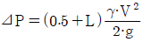
를 이용할 것)- 60
- 70
- 80
- 90
(정답률: 59%)
51. 흡수에 관한 설명으로 옳지 않은 것은?
- 습식세정장치에서 세정흡수효율은 세정수량이 클수록, 가스의 용해도가 클수록 헨리정수가 클수록 커진다.
- SiF4, HCHO 등은 물에 대한 용해도가 크나, NO, NO2 등은 물에 대한 용해도가 작은 편이다.
- 용해도가 적은 기체의 경우에는 헨리의 법칙이 성립한다.
- 헨리정수(atmㆍm3/kgmol)값은 온도에 따라 변하며, 온도가 높을수록 그 값이 크다.
(정답률: 54%)
52. 중력집진장치에서 집진효율을 향상시키기 위한 조건으로 옳지 않은 것은?
- 침강실 내의 처리가스의 유속을 느리게 한다.
- 침강실의 높이는 낮게 하고, 길이는 길게 한다.
- 침강실의 입구폭을 작게 한다.
- 침강실 내의 가스흐름을 균일하게 한다.
(정답률: 53%)
53. 불소화합물의 흡수처리에 관한 설명으로 가장 거리가 먼 것은?
- 세정장치 중 충전탑이 가장 적합하다.
- 물에 대한 용해도가 비교적 크므로 수세에 의한 처리가 적당하다.
- 스프레이탑을 사용할 때에 분무 노즐의 막힘이 없도록 보수관리에 주의가 필요하다.
- 처리 중 고형물을 생성하는 경우가 많다.
(정답률: 46%)
54. 먼지의 입경측정을 직접측정법과 간접측정법으로 분류할 때 다음 중 직접측정법에 해당하는 것은?
- 광산란법
- 관성충돌법
- 표준체즉정법
- 액상침강법
(정답률: 59%)
55. 사이클론에서 처리가스량에 대하여 외기의 누입이 없을 때 집진율은 88% 였다면 외부로부터 외기가 10% 누입이 될 때의 집진율은? (단, 이 때 먼지통과율은 누입되지 않은 경우의 3배에 해당한다.)
- 54%
- 64%
- 75%
- 83%
(정답률: 49%)
56. 반경이 15cm인 덕트에 1기압, 동점성계수 2.0×10-5m2/sec, 밀도 1.7g/cm3인 유체가 300m/min의 속도로 흐르고 있을 때 Reynold수는?
- 37500
- 42500
- 63750
- 75000
(정답률: 26%)
57. 다음 중 여과집진장치에서 여포를 탈진하는 방법이 아닌 것은?
- 기계적 진동(Mechanical Shaking)
- 펄스제트(Pulse Jet)
- 공기역류(Reverse Air)
- 블로다운(Blow Down)
(정답률: 69%)
58. 송풍기의 크기와 유체의 밀도가 일정한 조건에서 한 송풍기가 1.2kW의 동력을 이용하여 20m3/min의 공기를 송풍하고 있다. 만약 송풍량이 30m3/min으로 증가했다면 이 때 필요한 송풍기의 소요동력(kW)은?
- 1.5
- 1.8
- 2.7
- 4.1
(정답률: 24%)
59. 축류식 원심력 집진장치 중 반전형에 관한 설명으로 옳지 않은 것은?
- 입구가스 속도가 50m/sec 전후이다.
- 접선유입식에 비해 압력손실이 적은 편이다.
- 가스의 균일한 분배가 용이한 잇점이 있다.
- 함진가스 입구의 안내익에 따라 집진효율이 달라진다.
(정답률: 63%)
60. 다음 흡착장치 중 가스의 유속을 크게 할 수 있고, 고체와 기체의 접촉을 크게할 수 있으며, 가스와 흡착제를 향류로 접촉할 수 있는 장점은 있으나, 주어진 조업조건에 따른 변동이 어려운 것은?
- 유동층 흡착장치
- 이동형 흡착장치
- 고정층 흡착장치
- 원통형 흡착장치
(정답률: 63%)
4과목: 대기오염 공정시험기준(방법)
61. 소각로에서 배출되는 입자상 및 가스상 수은을 환원기화 원자흡광광도법으로 분석할 때 사용되는 흡수액은?
- 질산암모늄+황산용액
- 산성과망간산칼륨용액
- 염산히드록실아민용액
- 시안화칼륨+디티존용액
(정답률: 43%)
62. 가스크로마토그래프법에서 정량분석방법과 가장 거리가 먼 것은?
- 넓이 백분율법
- 내부표준법
- 내부첨가법
- 절대검량선법
(정답률: 41%)
63. 다음은 크로마토그래프의 감도조정부에 관한 사항이다. ( )안에 가장 적합한 것은?
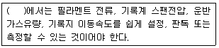
- 고수소 염광광도 검출기(HFPD)
- 수소염 이온화 검출기(FID)
- 수소염 고이온화 검출기(FHID)
- 열전도도 검출기(TCD)
(정답률: 62%)
64. 연료용 유류 중의 황함유량 분석방법으로 옳지 않은 것은?
- 연소관식 공기법은 500-550℃로 가열한 석영재질 연소관 중에 공기를 불어넣어 시료를 연소시킨 후 생성된 황산화물을 붕산나트륨(9%)에 흡수시켜 황산으로 만든다음, 수산화나트륨표준액으로 중화적정한다.
- 연소관식 공기법의 경우 불용성 황산염을 만드는 금속(Ba, Ca 등)이 들어있는 시료에는 적용할 수 없다.
- 연소관식 공기법의 경우 연소되어 산을 발생시키는 원소(P, N, Cl 등)가 들어있는 시료에는 적용할 수 없다.
- 방사선식 여기법은 시료에 방사선을 조사하고, 여기된 황의 원자에서 발생하는 형광 X선의 강도를 측정한다.
(정답률: 60%)
65. 특정 발생원에서 일정한 굴뚝을 거치지 않고 외부로 비산배출되는 먼지의 측정방법에 관한 설명으로 옳지 않은 것은?
- 시료채취장소는 원칙적으로 측정하려고 하는 발생원의 부지경계선상에 선정하며 풍향을 고려하여 그 발생원의 비산먼지 농도가 높을 것으로 예상되는 지점 3개소 이상을 선정한다.
- 시료채취장소 및 위치는 따로 풍상방향에 대상 발생원의 영향이 없을 것으로 추측되는 곳에 대조위치를 선정한다.
- 그 지역을 대표할 수 있는 지점에 풍향풍속계를 설치하여 전 채취시간 동안의 풍향풍속을 기록하고, 연속기록 장치가 없을 경우에는 적어도 30분 간격으로 여러지점에서 3회 이상 풍향풍속을 측정하여 기록한다.
- 풍속이 0.5m/초 미만 또는 10m/초 이상되는 시간이 전 채취시간의 50% 미만일 때 풍속에 대한 보정계수는 1.0 이다.
(정답률: 62%)
66. 굴뚝 배출가스 중 산소측정분석에 사용되는 화학분석법(오르자트분석법)에 관한 설명으로 옳지 않은 것은?
- 흡수의 순서는 CO2, O2 이다.
- CO2의 흡수액에는 수산화칼륨의 용액을 사용한다.
- 산소흡수액을 만들 때에는 되도록 공기와의 접촉을 피한다.
- 산소흡수액은 물과 수산화나트륨을 녹인 용액에 피로갈롤을 녹인 용액으로 한다.
(정답률: 52%)
67. 대기환경 중에 존재하는 휘발성유기화합물(VOCs) 중 오존생성 전구물질과 유해대기오염물질의 농도를 측정하기 위한 시험방법에 관한 설명으로 옳지 않은 것은?
- 가스크로마토그래프법과 형광분광광도법이 있으며, 형광분광광도법을 주시험법으로 한다.
- 흡착관은 스테인레스 스틸(5×89mm) 또는 유리재질(5×89mm)로 된 관에 측정대상성분에 따라 흡착제를 선택하여 각 흡착제의 돌파부피를 고려하여 200mg이상으로 충진한 후 사용한다.
- 흡인펌프는 사용목적에 맞는 용량의 펌프를 사용하며, 이 시험방법에서는 저용량 펌프를 사용한다.
- 흡착관은 사용하기 전에 반드시 안정화단계를 거쳐야 하는데, 보통 350℃(흡착제의 종류에 따라 조정가능)에서 헬륨가스 50mL/min으로 적어도 2시간 동안 안정화시킨다.
(정답률: 36%)
68. 다음은 비분산 적외선 분석법에 사용되는 가스분석계의 성능기준이다. ( )안에 가장 알맞은 것은?
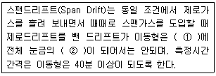
- ① 6시간 동안 , ② ±2% 이상
- ① 4시간 동안 , ② ±2% 이상
- ① 6시간 동안 , ② ±5% 이상
- ① 4시간 동안 , ② ±5% 이상
(정답률: 50%)
69. 공기를 사용하는 중유 연소 보일러의 굴뚝 배출가스 유속을 피토우관으로 측정하니 동압이 8.5mmH2O였다. 측정점의 유속은? (단, 굴뚝 배출가스의 온도는 273℃, 1기압, 피토우관 계수는 1.0이다. 표준상태의 공기밀도는 1.3kg/Sm3)
- 8m/sec
- 12m/sec
- 16m/sec
- 19m/sec
(정답률: 48%)
70. 다음 중 연료의 연소, 금속제련 또는 화학반응 공정 등에서 배출되는 굴뚝 배출가스 중의 일산화탄소 분석방법이라 볼 수 없는 것은?
- 가스크로마토그래프법
- 정전위 전해법
- 비분산 적외선 분석법
- 용액전도율법
(정답률: 40%)
71. 굴뚝 배출가스 중 먼지를 보통형 흡인노즐을 이용할 때 등속흡인을 위한 흡인량(L/min)은?
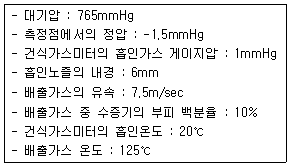
- 14.8
- 11.6
- 9.9
- 8.4
(정답률: 24%)
72. 굴뚝배출가스 중 먼지측정을 위한 시료채취방법에 관한 사항으로 옳지 않은 것은?
- 피토관을 측정공에서 굴뚝내의 측정점까지 삽입하여 전압공을 배출가스 흐름방향에 바로 직면시켜 압력계에 의하여 동압을 측정한다.
- 동압은 원칙적으로 0.1mmH2O의 단위까지 읽고, 이 때, 피토관의 배출가스 흐름방향에 대한 편차를 100이하가 되어야 한다.
- 한 채취점에서의 채취시간을 최소 30초 이상으로 하고 모든 채취점에서 채취시간을 동일하게 한다.
- 등속흡인식에 의해서 등속계수를 구하고 그 값이 95-110% 범위 내에 들지 않는 경우에는 다시 시료채취를 행한다.
(정답률: 49%)
73. 다음은 환경대기 중 아황산가스 농도 측정을 위한 파라로자닐린법(Pararosaniline Method)에 관한 설명이다. ( )안에 알맞은 것은?
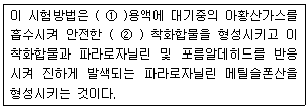
- ① 이염화수은나트륨 , ② 사염화 아황산수은염
- ① 사염화수은칼륨 , ② 이염화 아황산수은염
- ① 이염화수은칼륨 , ② 사염화 아황산수은염
- ① 사염화수은나트륨 , ② 이염화 아황산수은염
(정답률: 44%)
74. 굴뚝배출가스 중 질소산화물을 연속적으로 자동측정하는 방법 중 자외선 흡수 분석계의 구성에 관한 설명으로 옳지 않은 것은?
- 광원 : 중수소방전관 또는 중압수은등을 사용한다.
- 시료셀 : 시료가스가 연속적으로 흘러갈 수 있는 구조로 되어 있으며 그 길이는 200-500mm이고, 셀의 창은 석영판과 같이 자외선 및 가시광선이 투과할 수 있는 재질이어야 한다.
- 검출기 : 가시광선 및 자외부에서 강도가 좋은 비분산 자외선광배전관이 이용된다.
- 합산증폭기 : 신호를 증폭하는 기능과 일산화질소 측정 파장에서 아황산가스의 간섭을 보정하는 기능을 가지고 있다.
(정답률: 37%)
75. 굴뚝 배출가스 중 포름알데히드 농도를 아래 표의 크로모트로핀산법으로 분석하여 다음과 같은 분석결과를 얻었다. 이 경우 포름알데히드의 농도(ppm)은?
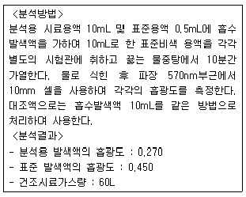
- 0.⑤
- 0.10
- 0.14
- 0.28
(정답률: 20%)
76. 고성능 이온크로마토그래피의 장치 중 써프렛서에 관한 설명으로 가장 거리가 먼 것은?
- 목적성분의 전기전도도를 낮추어 이온성분을 고감도로 검출할 수 있게 해준다.
- 용리액에 사용되는 전해질 성분을 제거하기 위한 것이다.
- 정치의 구성상 써프렛서 앞에 분리관이 위치한다.
- 관형 써프렛서에 사용하는 충전물은 스티롤계 강산형 및 강염기형 수지이다.
(정답률: 38%)
77. 폐기물 소각로에서 배출되는 다이옥신류의 최종배출구에서 시료채취시 흡인가스량으로 가장 적합한 것은? (단, 기타 사항은 고려하지 않는다.)
- 4시간 평균 3Nm3 이상
- 2시간 평균 1Nm3 이상
- 2시간 평균 0.5Nm3 이상
- 4시간 평균 2Nm3 이상
(정답률: 53%)
78. 다음 중 대기오염공정시험기준상 분석시험에 있어 기재 및 용어에 관한 설명으로 옳은 것은?
- 용액의 액성표시는 따로 규정이 없는 한 유리전극법에 의한 pH 미터로 측정한 것을 뜻한다.
- 시험조작중“즉시”란 10초 이내에 표시된 조작을 하는 것을 뜻한다.
- “감압 또는 진공”이라 함은 따로 규정이 없는 한 10mmHg 이하를 뜻한다.
- “정확히 단다”라 함은 규정한 양의 검체를 취하여 분석용 저울로 0.3mg까지 다는 것을 뜻한다.
(정답률: 56%)
79. 굴뚝 배출가스 중 이황화탄소 분석방법으로 옳지 않은 것은?
- 흡광광도법은 시료가스채취량 10L인 경우 배출가스중의 이황화탄소 농도 3-60V/Vppm의 분석에 적합하다.
- 흡광광도법은 디에틸아민동 용액에서 시료가스를 흡수시켜 생성된 디에틸디티오카바민산동의 흡광도를 435nm의 파장에서 측정한다.
- 가스크로마토그래프법에서 배출가스중에 포함된 황화합물의 대부분이 이황화탄소이어서 전황화합물로 측정해도 지장이 없는 경우에는 분리관을 생략한 불꽃광도 검출방식 연속분석계를 사용해도 된다.
- 열전도도검출기(TCD)를 구비한 가스크로마토그래프를 사용하여 정량하며, 이 방법은 이황화탄소농도 0.⑤V/Vppm이상의 분석에 적합하다.
(정답률: 44%)
80. 가스크로마토그래프법에서 사용되는 용어의 관한 설명으로 옳지 않은 것은?(관련 규정 개정전 문제로 여기서는 기존 정답인 2번을 누르면 정답 처리됩니다. 자세한 내용은 해설을 참고하세요.)
- 일반적으로 5-30분 정도에서 측정하는 피이크의 보유시간은 반복시험을 할 때 ±3% 오차범위 이내이어야 한다.
- 기록계는 스트립 차아트식 자동평형 기록계로 스팬전압 10mV, 펜 응답시간 10초 이내, 기록지 이동속도는 10mm/분을 포함한 다단변속이 가능한 것이어야 한다.
- 분리관 오븐의 온도조절 정밀도는 ±0.5℃범위이내(오븐의 온도가 150℃부근일 때)이어야 한다.
- 주사기를 사용하는 시료도입부는 실리콘고무와 같은 내열성 탄성체격막이 있는 시료 기화실로서 분리관온도와 동일하거나 또는 그 이상의 온도를 유지할 수 있는 가열기구가 갖추어져야 한다.
(정답률: 54%)
5과목: 대기환경관계법규
81. 다음은 대기환경보전법규상 자동차 운행정지표지에 관한 사항이다. ( )안에 알맞은 것은?
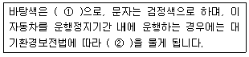
- ① 흰색 , ② 100만원 이하의 벌금
- ① 흰색 , ② 300만원 이하의 벌금
- ① 노란색 , ② 100만원 이하의 벌금
- ① 노란색 , ② 300만원 이하의 벌금
(정답률: 55%)
82. 대기환경보전법규상 배출가스 보증기간 적용기준에 관한 설명으로 옳지 않은 것은) ?단, 2013년 1월 1일 이후 제작자동차)
- 보증기간은 자동차 소유자가 자동차를 구입한 일자를 기준으로 한다.
- 배출가스 보증기간의 만료는 기간 또는 주행거리, 가동시간 중 먼저 도달하는 것을 기준으로 한다.
- 휘발유와 가스를 병용하는 자동차는 휘발유 사용 자동차의 보증기간을 적용한다.
- 건설기계 원동기 및 농업기계 원동기의 결함확인검사 대상기간은 19kW 미만은 4년 또는 2250시간, 37kW 미만은 5년 또는 3750시간, 37kW 이상은 7년 또는 6000시간으로 한다.
(정답률: 52%)
83. 환경정책기본법령상 대기 환경기준 항목과 그 측정방법이 알맞게 짝지어진 것은?
- 아황산가스 : 원자흡광광도법
- 일산화탄소 : 비분산자외선분석법
- 오존 : 자외선광도법
- 미세먼지(PM-10) : 가스크로마토그래프법
(정답률: 49%)
84. 다음 중 대기환경보전법령상 “3종 사업장”에 해당되는 것은?
- 대기오염물질발생량의 합계가 연간 9톤인 사업장
- 대기오염물질발생량의 합계가 연간 11톤인 사업장
- 대기오염물질발생량의 합계가 연간 22톤인 사업장
- 대기오염물질발생량의 합계가 연간 52톤인 사업장
(정답률: 59%)
85. 대기환경보전법규상 대기배출시설을 설치 운영하는 사업자에 대하여 조업정지를 명하여야 하는 경우로서 그 조업정지가 주민의 생활, 기타 공익에 현저한 지장을 초래할 우려가 있다고 인정되는 경우 조업정지처분에 갈음하여 과징금을 부과할 수 있다. 이 때 행정처분 시 과징금의 부과금액 산정 시 적용되지 않는 항목은?
- 조업정지일수
- 오염물질별 부과금액
- 1일당 부과금액
- 사업장 규모별 부과계수
(정답률: 43%)
86. 다음은 대기환경보전법령상 사업장별 환경기술인의 자격 기준에 관한 사항이다. ( )안에 알맞은 것은?
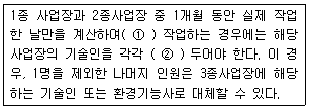
- ① 1일 평균 15시간 이상 , ② 1명씩
- ① 1일 평균 15시간 이상 , ② 2명씩 이상
- ① 1일 평균 17시간 이상 , ② 1명씩
- ① 1일 평균 17시간 이상 , ② 2명씩 이상
(정답률: 59%)
87. 다음은 악취방지법규상 복합악취에 대한 배출허용기준 및 엄격한 배출허용기준의 설정 범위이다. ( )안에 알맞은 것은?
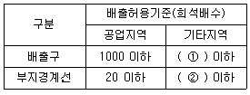
- ① 750 , ② 15
- ① 750 , ② 10
- ① 500 , ② 15
- ① 500 , ② 10
(정답률: 51%)
88. 대기환경보전법규상 위임업무 보고사항 중 자동차 연료 및 첨가제의 제조ㆍ판매 또는 사용에 대한 규제현황의 보고 횟수 기준은?
- 연 1 회
- 연 2 회
- 연 4 회
- 연 12 회
(정답률: 55%)
89. 대기환경보전법령상 초과부과금 산정기준 중 오염물질별 1킬로그램당 부과금액으로 옳은 것은?
- 이황화탄소 - 1600원
- 황산화물 - 1400원
- 불소화합물 - 7300원
- 황화수소 - 7400원
(정답률: 47%)
90. 대기환경보전법규상 수도권대기환경청장 , 국립환경과학원장 또는 한국환경공단이 설치하는 대기오염 측정망의 종류에 해당하지 않는 것은?
- 대기오염물질의 국가배경농도와 장거리이동 현황을 파악하기 위한 국가배경농도측정망
- 대기오염물질의 지역배경농도를 측정하기 위한 교외대기측정망
- 도시지역의 휘발성유기화합물 등의 농도를 측정하기 위한 광화학대기오염물질측정망
- 대기 중의 중금속 농도를 측정하기 위한 대기중금속측정망
(정답률: 57%)
91. 다중이용시설 등의 실내공기질 관리법규상 폼알데하이드의 신축 공동주택의 실내공기질 권고기준은?
- 30㎍/m3 이하
- 210㎍/m3 이하
- 360㎍/m3 이하
- 700㎍/m3 이하
(정답률: 53%)
92. 대기환경보전법령상 배출허용 기준초과와 관련한 개선명령을 받은 사업자는 그 명령을 받은 날부터 며칠 이내에 개선계획서를 환경부장관에게 제출하여야 하는가? (단, 연장이 없는 경우)
- 즉시
- 10일 이내
- 15일 이내
- 30일 이내
(정답률: 41%)
93. 대기환경보전법규상 한국환경공단이 환경부장관에게 위탁 업무보고사항 중 “자동차배출가스 인증생략 현황”의 보고횟수 기준은?
- 수시
- 연 1회
- 연 2회
- 연 4회
(정답률: 45%)
94. 대기환경보전법상 환경부장관은 대기오염물질과 온실가스를 줄여 대기환경을 개선하기 위하여 대기환경개선 종합계획을 몇 년마다 수립하여 시행하여야 하는가?
- 1년 마다
- 3년 마다
- 5년 마다
- 10년 마다
(정답률: 47%)
95. 대기환경보전법규상 운행차배출허용기준에 관한 사항으로 옳지 않은 것은?
- 희박연소(Lean Burn)방식을 적용하는 자동차는 공기과잉률 기준을 적용하지 아니한다.
- 1993년 이후에 제작된 자동차 중 과급기(Turbo Charger)나 중간냉각기(Intercooler)를 부착한 경유사용 자동차의 배출허용기준은 무부하급가속 검사방법의 매연 항목에 대한 배출허용기준에 5%를 더한 농도를 적용한다.
- 알코올만 사용하는 자동차는 탄화수소 기준만 적용한다.
- 수입자동차는 최초등록일자를 제작일자로 본다.
(정답률: 57%)
96. 대기환경보전법령상 기본부과금의 농도별 부과계수기준 중 연료의 황함유량이 1.0% 이하인 경우 농도별 부과계수는? (단, 연료를 연소하여 황산화물을 배출하는 시설(황산화물의 배출량을 줄이기 위하여 방지시설을 설치한 경우와 생산공정상 황산화물의 배출량이 줄어든다고 인정하는 경우는 제외한다.))
- 0.2
- 0.4
- 0.7
- 1.0
(정답률: 53%)
97. 대기환경보전법상 ( )안에 가장 적합한 것은?
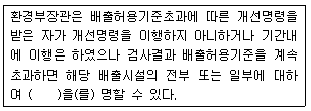
- 등록취소
- 조업정지
- 이전
- 경고
(정답률: 55%)
98. 다중이용시설 등의 실내공기질 관리법규상 “인터넷컴퓨터게임시설제공업 영업시설”의 총휘발성유기화합물(㎍/m3)에 대한 실내공기질 권고기준은? (단, 총휘발성유기화합물의 정의는 환경분야 시험ㆍ검사등에 관한 법률에 따른 환경오염공정시험기준에서 정한다.)
- 300이하
- 400이하
- 500이하
- 1000이하
(정답률: 31%)
99. 다음은 대기환경보전법상 자동차의 운행정지에 관한 사항이다. ( )안에 알맞은 것은?
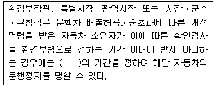
- 5일 이내
- 7일 이내
- 10일 이내
- 15일 이내
(정답률: 39%)
100. 대기환경보전법규상 먼지ㆍ황산화물 및 질소산화물의 연간 발생량 합계가 18톤인 시설의 자가측정횟수 기준은? (단, 특정대기유해물질이 배출되지 않으며, 관제센터로 측정결과를 자동전송하지 않는 사업장의 배출구이다.)
- 매주 1회 이상
- 1개월마다 2회 이상
- 2개월마다 1회 이상
- 분기마다 1회 이상
(정답률: 46%)